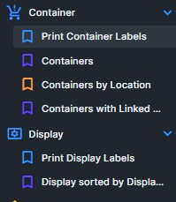
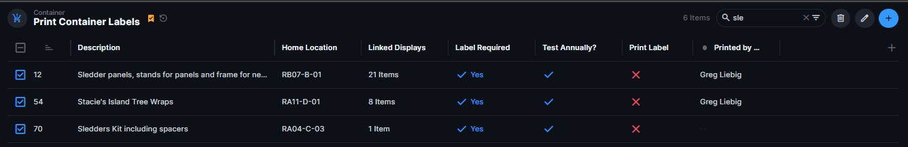
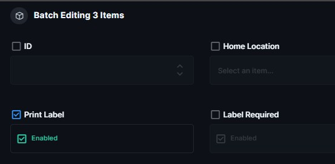

Author: Greg Liebig / Engineering Innovations, LLC
Date: 2026-03-22
System Version: Label Service v3.x
This guide explains how to print display and container labels using the Directus interface.
This is semi-production ready and any suggestions or problems you may run into, please let Greg know so they can be corrected.
The system cannot reliably detect an empty tape cartridge.
Before printing:
✔ Verify tape cartridge is installed
✔ Verify tape width matches template (1.4")
✔ Verify printer is powered on and online
The label printing system runs on a dedicated print server machine. Labels will NOT print unless this service is running.
The service runs on the Label Print Server (separate machine).
This allows labels to be queued to print from any authenticated device at any time.
🚫 DO NOT click "Print" multiple times in Directus
If nothing prints immediately:
👉 STOP and check the service first
The system runs on a polling cycle and may take a few seconds to respond.
Repeated clicks will create duplicate batches and waste label tape.
Only start the service if:
✔ Labels are not printing
✔ The Blue service window is NOT open or in the task bar.
If the service is already running → DO NOT restart it
👉 Start Label Service icon
A window will open with:
✔ Blue background
✔ Yellow text
✔ Command-style appearance
This is the Label Print Service window
Within a few seconds, you should see:
Startup health check PASSED.
Service READY — polling every 15 seconds.
If you see this, the system is ready.
⚠ This window must remain open at all times
🚫 DO NOT click the X (this will STOP the service)
✔ Use the _ (minimize) button instead
If this window is closed:
❌ Label printing will STOP
❌ The system will NOT recover automatically
Open Google Chrome and make sure these are available:
Before reprinting anything, check:
✔ The blue/yellow service window is open
✔ No error messages are shown
✔ The system shows polling messages
Follow this EXACT order:
Wait 10–15 seconds
Check the service window
ONLY AFTER VERIFYING ABOVE
🚫 Do NOT repeatedly click print
Ctrl + C
If the service is running and printing still fails:
👉 Contact Greg
Do NOT continue retrying
Use the Directus left navigation panel.

Display → Print Display Labels
Container → Print Container Labels
Use the search box at the top of the table.
Example:
Use the checkbox column on the left side of the table.

Select all items you want to print.
Click the pencil icon in the upper-right corner.
This opens the batch editing panel.
Toggle Print Label → Enabled

Then save the changes.
After saving:
No further action is required.
Check the following:
If problems persist, notify system administrator.
Symptoms:
Action:
Note: This section is not tested as of 3/22/26-GAL
✔ Print labels in manageable batches
✔ Verify output before removing items
✔ Keep spare cartridges nearby
✔ Do not power off printer during printing
Contact the MSB production database administrator if printing repeatedly fails or produces incorrect labels.